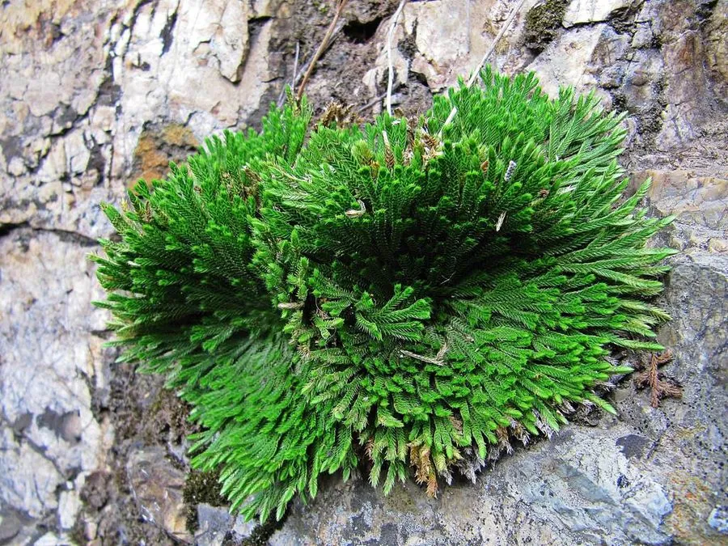

蕨类与裸子植物 · 植物界
卷柏 Selaginella tamariscina

卷柏能在干旱时枝叶蜷缩成团、遇水重新舒展，被称为“九死还魂草”，是生命力极强的多年生蕨类植物。
- 分类
- 门蕨类植物门纲石松纲目卷柏目科卷柏科属卷柏属
- 栖息环境
- 向阳山坡岩缝、悬崖石壁与干旱瘠薄处，耐旱怕涝
- 地理分布
- 中国大部分地区及朝鲜、日本、东南亚等地
- 保护级别
- 暂无评估；野生种群稳定
物种志
卷柏是卷柏科的多年生蕨类，植株低矮，高 5–15 cm。它的主茎短而粗壮，基部生有许多不定根，状如小树桩；枝叶丛生，分枝多回羽状，叶片细小、鳞片状，螺旋排列在茎上，深绿色至灰绿色。干旱时枝叶向内卷曲，整株缩成拳头大的球状；遇雨水浸润后，卷曲的枝叶重新舒展，恢复绿色，因而有“还魂草”之称。
卷柏多生长于干旱岩石缝、山坡向阳处与悬崖石壁上，耐旱、耐瘠薄，却怕长期积水。它的“复活”并非真正死而复生，而是通过降低含水量进入休眠状态，减少蒸腾以熬过旱季。卷柏以孢子繁殖，也可分株栽培，是盆景与岩石园的趣味植物。全草入药称为“卷柏”，有活血止血、收敛之效。它在东亚、南亚及东南亚分布广泛，中国大部分地区均有记录。
形态与习性
- 株高5–15 cm
- 叶细小鳞片状，螺旋排列于茎上
- 耐旱性极强，可休眠数月后遇水复苏
- 繁殖孢子繁殖或分株繁殖
- 光照喜光，也耐半阴
- 药用全草活血止血、收敛
- 别名九死还魂草、还魂草
趣味知识
- 卷柏干旱时缩成球，遇水几小时内就能舒展变绿，常被误认为死而复生。
- 它的耐旱靠的是降低细胞含水量进入休眠，并不是真的死过。
- 园艺中常把卷柏做成小盆景，浇透水后很快就能重新展开。